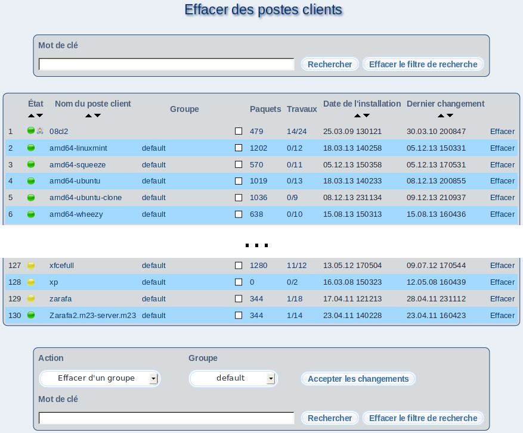

Afin d'effacer un poste client, cliquez sur Effacer. Dans le dialogue suivant, vous pouvez vous assurer qu'il s'agit du poste client voulu.
Lorsque vous cliquez sur le nom d'un client, des informations détaillées s'afficheront pour le client sélectionné; de plus, vous aurez accès au centre de contrôle.
Sous-sections
root
2018-05-08